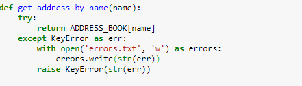
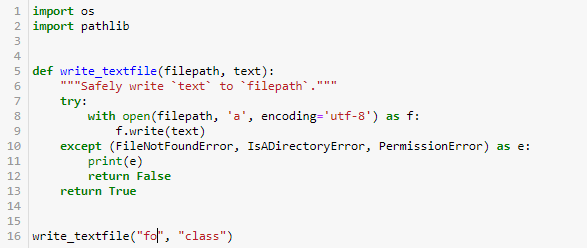

יאפ, תיקנתי. אשחרר מחר. תודה!
בהחלט, תיקנתי ואשחרר מחר. תודה 

יאפ, תיקנתי. אשחרר מחר. תודה!
בהחלט, תיקנתי ואשחרר מחר. תודה
לא, אינה טעות. 
מחברת 4 - טכניקות בניהול חריגות:

נראה לי נכון יותר “a” לקובץ לוג
מחברת 4 גישת EAFP:

א. שם הקובץ fo.txt
ב. יש עוד 2 סוגי שגיאות: ValueError, OSError לשגיאת נתיב - במידה ושמים מספר או נתיב בפורמט לא חוקי עם \ במקום /
בקטע קוד:
def read_file(path):
try:
princess = open(path, 'r')
text = princess.read()
except (FileNotFoundError, PermissionError) as err:
print(f"Can't find file '{path}'.\n{err}.")
text = None
else:
princess.close()
finally:
return text
print(read_file('resources/castle.txt3'))
נעשה שימוש ב return ב finally. כשביצעתי כזה בתרגיל, קיבלתי הערה מהבודק ש
הבודק האוטומטי: B012-return/continue/break inside finally blocks cause exceptions to be silenced. Exceptions should be silenced in except blocks. Control statements can be moved outside the finally block.
אצלי בקוד השימוש היה זהה, החזרת משתנה בלבד. אשמח להבהרה אם מי נכון, הדוגמא או הבודק. תודה
מחברת 4, בדוגמה 2: כתיבה לקובץ.
כתוב - נתכנת פונקציה שמקבלת נתיב לקובץ ולטקסט, וכותבת את הטקסט לקובץ.
מניח שה ‘ל’ מיותרת. היא גורמת לזה קצת להראות (במבט ראשון לפחות) כאילו הפונקציה מקבלת רק פרמטר אחד.
תודה לכולם על התיקונים.
עדכנתי יחד עם העלאת מחברת 5
מחברת 4: ילד שלי מוצלח - הערה לא הכי קריטית: מבקשים שניצור את הפונקציה get_user שמחזירה ID. אז היה יותר הגיוני שהשם יהיה get_user_id.
זו לא טעות לדעתי.
VarName זה פשוט ביטוי שתחליף אותו בכל שם רלוונטי שתרצה (בעדיפות משה שמזכיר Error).
אה אוקי הבנתי כן זה כמו שאני כותב לעצמי לפעמים “function_name” במקום שאמור להיכנס שם הפונקציה.
פתאום שמישהו אחר עושה את זה זה בלבל אותי … חיחיחי
מחברת 5 - תרגיל מחשמל, שאלת בונוס:
בונוס: ודאו גם שהקוד הבא עובד ומחזיר False:
בגלל שיש בדיקה של == False, אז התוצאה שיוצאת היא True. זה לא באמת טעות, כי באמת חוזר False, אבל הניסוח בצירוף הבדיקה יצרה לי בהתחלה בילבול.
היא יוצאת True רק בתוצאה של ה print אבל לא בחישוב עצמו. בגלל זה הופתעתי בתוצאה של שאלת הבונוס מכיוון שעכשיו הFalse התייחס לתוצאה עצמה ולא לפרינט.
אצלי לא יוצא בprint
True
אז יש לך טעות בקוד כנראה
רגע, אנחנו מדברים על אותו תרגיל? אין פה סעיפים ב וג.
למה?
סעיף ב:
-מOrGate יוצא True
-מAndGate יוצא False
-בשער הסופי שהוא Orgate יוצא גם True, אז אם אני משווה לFalse, יוצא False…
אה, התייחסת לכל שורה כסעיף. בכל אופן עם ההדפסה זה אמור לצאת הכל True כפי שכתוב בתרגיל
לאחר שכתבתם את הקוד, ודאו שהקוד הבא, שמדמה את המעגל מהאיור למעלה, מדפיס רק True:
(תשאיר את השרשור הזה רק לתיקונים ולא לשאלות על התרגיל עצמו)
עכשיו כשאתה מסתכל על זה כשורה, למה זה יוצא False?
קצת קטנוני אבל אם כבר המחברות האלה יגיעו לעוד הרבה אנשים כדאי לתקן:

בפונקציה אחת כתוב writeble ובאחת writeable.
צריך לתקן לwriteable בראשונה
{kind=link}